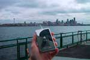
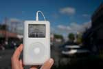
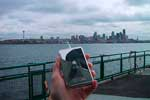
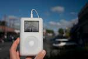
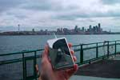
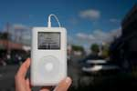

Добро пожаловать туда, где можно похвастаться своим iPod и рассказать, где вы с ним были. Хотите повеселиться вместе с нами? Все, что вам нужно для этого, - это любой iPod: от раннего iPod Classic до самого совершенного iPod Nano, от самого маленького iPod Shuffle до самого большого iPod Video, а также цифровая камера. Просто сфотографируйте свой iPod в любом месте, и мы будем рады поместить этот снимок на сайте myPod. Итак, чего вы ждете?
Я и мой iPod в Сиэтле! Здесь видна Спейс Нидл.
И не видно 628 кафе.


Это несколько фотографий из Бирмингема. Мы повстречали здесь несколько людей, страстно влюбленных в свои iPod. Взгляните на британские красные телефонные будки!